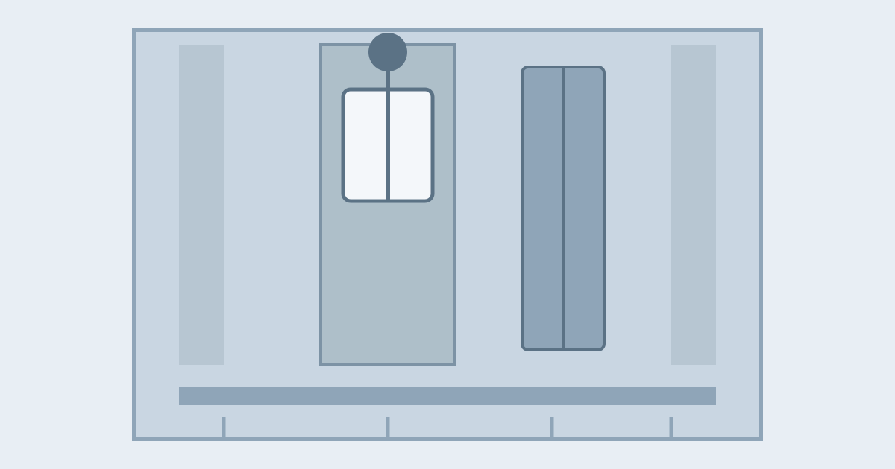

How Do Elevators Work?

You press a button, the doors slide open, and a few seconds later you are ten floors up, barely feeling a thing. It is easy to assume the elevator is simply pulled up by a rope, like a bucket from a well. The real system is more clever: a carefully balanced machine, where most of the work is done by a heavy weight you never see, moving in the opposite direction to you.
Almost every elevator in a tall building works on the same basic idea: a car that carries people, a counterweight that balances it, steel cables joining the two, and a motor that turns a wheel to move the cables. Add guide rails to keep everything straight, a set of brakes and safety devices, and a control system that decides where the car should go next, and you have a machine that can run thousands of trips a day, for decades, with very little drama.
The Counterweight Does Half the Work
The counterweight is a stack of steel or concrete plates that hangs in the same vertical shaft as the car, on the other end of the cables. It is deliberately heavy: roughly the weight of the empty car plus about half of its maximum load. When the car is half full, the two sides weigh almost the same, so the motor barely has to work. It only needs to overcome friction and tip the balance one way or the other.
This is why an elevator uses far less energy than you might expect. The motor is not hauling the full weight of a loaded car up ten floors on every trip. It is nudging a balanced system. When a full car goes down, its extra weight pulls the counterweight up. When an empty car goes up, the heavier counterweight helps pull it. The system is always trading weight between the two sides, and the motor only supplies the difference.
Cables, Sheave, and Motor
The cables are steel wire ropes, each one made of many thin steel wires twisted into strands, and the strands twisted together into a rope. A typical passenger elevator hangs from four to eight of these ropes, and any one of them on its own is strong enough to hold the car. The ropes run from the top of the car, up over a grooved wheel called a sheave at the top of the shaft, and down to the counterweight.
The sheave is connected to an electric motor, in a machine room above the shaft or in the shaft itself. When the motor turns the sheave, friction in the grooves grips the ropes and moves them, and the car and counterweight slide in opposite directions. The motor does not wind the cable onto a drum, as a crane does. The rope simply passes over the wheel, which is why this type is called a traction elevator. Traction, the grip between rope and wheel, is what makes the whole system work.
Guide Rails Keep the Ride Straight
A car hanging from cables would swing like a pendulum if nothing held it in place. Two sturdy steel guide rails run the full height of the shaft, one on each side of the car, and roller guides on the car grip them. The counterweight has its own, lighter pair of rails. The rails keep the car upright and centred, so the doors line up with each floor and the ride feels steady. They have a second job too: if the safety system ever has to stop the car in an emergency, it clamps onto these rails, which are strong enough to hold the full weight of the car.
Hydraulic Elevators: A Different Answer for Low Buildings
Not every elevator uses cables and a counterweight. In low buildings of two to six floors, you will often find a hydraulic elevator instead: an electric pump pushes oil into a cylinder, a piston rises, and the car is lifted. To go down, a valve opens, oil flows back to a tank, and the car sinks under its own weight. Hydraulic elevators are simpler and cheaper, but slower and thirstier, and the piston must reach as deep below ground as the elevator rises above it, limiting their height. In a skyscraper, traction wins every time.
The Safety Systems You Never Notice
Elevators have a reputation for being dangerous in films, where a snapped cable sends the car plunging. In reality, the safety record of modern elevators is extremely good, because safety does not depend on any single part. It is built in layers, and each layer backs up the others.
First, there are multiple cables, each strong enough to hold the car alone. Second, the brakes are on by default: an electromagnet holds them open while the elevator runs, and if the power fails, the spring-loaded brakes clamp shut on their own, so a power cut means a stopped car, not a falling one. Third, and most important, is the overspeed governor at the top of the shaft, connected to the car by its own small rope. If the car ever moves too fast, the governor trips safety clamps under the car, which wedge against the guide rails and stop it. A free fall would require the cables, brakes, governor, and clamps all to fail at once.
There are smaller layers too. The doors will not open unless the car is level with a floor, and the car will not move unless the doors are fully closed. Sensors in the doorway detect a person or bag in the way and hold the doors open. At the bottom of the shaft, large buffers wait to cushion the car if it ever travelled too far down. Every layer is checked on a regular maintenance schedule, and in most places the law requires it.
How the Elevator Decides Where to Go
The control system is the elevator's brain. Pressing the hall button registers a request, and the controller weighs where the car is, which direction it is travelling, and what else is waiting, then picks the most sensible order. A car travelling upward will usually keep collecting upward requests rather than reversing for a downward call, which is why a lift sometimes passes your floor and comes back for you. Inside, floor buttons are queued in order of travel, not the order pressed. Shaft sensors tell the controller exactly where the car is, so it slows smoothly and stops level with the floor.
Common Misconceptions
One common belief is that pressing the call button repeatedly makes the elevator arrive faster. It does not: the first press registers the request, and later presses are ignored. Another is that the doors can be forced open between floors so you could climb out. In fact, the doors are interlocked and cannot open unless the car is at a floor, precisely to prevent that. If the car stops between floors, the correct action is to use the alarm or intercom and wait: the car is safe, rescue is a routine job, and trying to climb out through a gap is how people get hurt. A third is that an elevator could fall in a power cut. The brakes fail safe: they engage when power disappears, so a power cut strands the car rather than dropping it.
Frequently Asked Questions
Can an elevator really fall?
In a modern traction elevator, a true free fall is extremely unlikely. Multiple cables, fail-safe brakes, the overspeed governor, and the rail clamps would all have to fail together. Elevators are among the safest forms of transport, with far fewer injuries per journey than cars or stairs.
Why does the elevator sometimes stop at a floor nobody asked for?
Usually someone did ask: a hall button was pressed on that floor, or a passenger inside pressed the button and then got out at another floor. The controller still honours the request.
Why do the doors sometimes open again just as they are closing?
The doorway sensors detected something in the opening, a person, a bag, or a hand in the beam. The doors reopen as a safety measure, then try again.
Conclusion
An elevator is a balancing act. The counterweight carries roughly the car's weight, the ropes and sheave turn that balance into motion, the rails keep everything true, and layers of brakes, governors, and interlocks stand ready if anything goes wrong. The motor only tips a system that is already nearly balanced. The next time you glide upward without a jolt, you are riding on that balance: a heavy weight sinking as you rise, a wheel gripping steel rope, and a century of safety engineering quietly at work in the shaft around you.